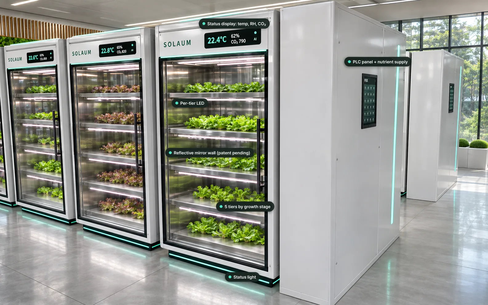
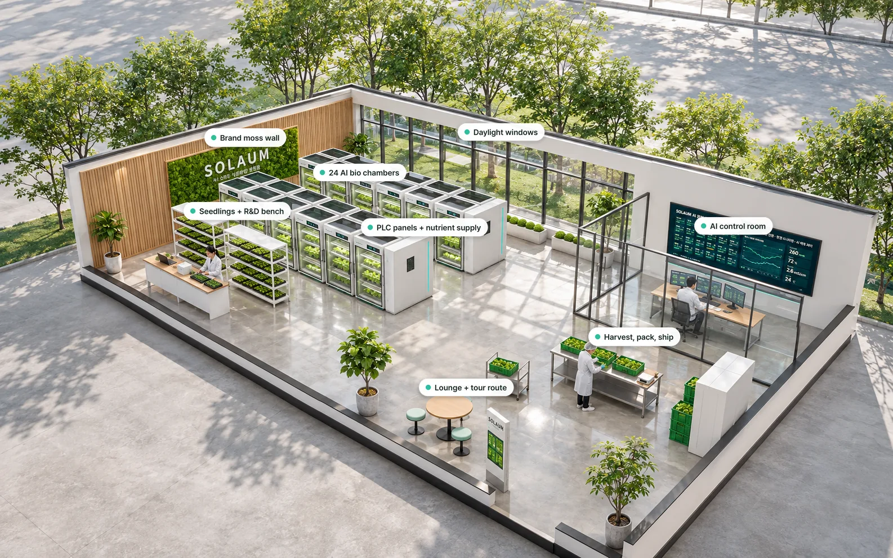

12.4%
Rise in vegetable prices in one month
Korea's consumer prices for vegetables rose 12.4% from July to August 2026, with lettuce up 28.4% and spinach up 68.2%.
AI bio chambers for urban micro farms
SOLAUM grows fresh vegetables in refrigerator-sized AI bio chambers placed in vacant urban spaces, and supplies them right where they are grown.
 Concept rendering
SOLAUM indoor farm
Concept rendering
SOLAUM indoor farm
Korea is losing farmers and farmland while heatwaves grow longer, and half of what consumers pay for produce goes to distribution. Meanwhile, storefronts across its cities sit empty.
Korea's consumer prices for vegetables rose 12.4% from July to August 2026, with lettuce up 28.4% and spinach up 68.2%.
The 2023 average for Korean farm produce. For leafy and root vegetables such as napa cabbage and radish, it reaches 64.3%.
Nationwide in Q3 2026. In Daegu, our first site, it is 19.6%, 4.9 points above the national rate.
More than half of Korea's farming and fishing population was 65 or older in 2025, straining labor-intensive vegetable production.
Sources: Consumer Price Trends (Aug 2026), Agricultural Distribution Survey (2023), Commercial Real Estate Rental Trends (Q3 2026), Census of Agriculture, Forestry and Fisheries (2025)
Inside a refrigerator-style cabinet with a 2.4 m² footprint, a PLC and AI manage light, nutrient solution and air together, creating the right conditions for each crop whatever the weather outside.

Concept renderingAdjusts light intensity and spectrum directly above the crops on every tier.
Redirect light that would escape to the walls back onto the crops. Patent pending.
Tiers are split by growth stage, using height to make the most of a small footprint.
Slides in and out by its handle, making harvests and solution changes easy.
Temperature, humidity and CO₂ on the front panel and on your phone.
With LEDs only overhead, leaves shade one another as crops grow, so edge plants and lower leaves fall behind. SOLAUM chambers place mirrors around each LED to return stray light to the crops, and adjust the mirrors' tilt and curvature to match plant height.
Research shows that bringing lights closer to crops and lining grow compartments with reflective curtains improves energy-use efficiency (Frontiers in Plant Science, 2023).
An edge AI on every chamber forecasts the next 24 hours of conditions and harvest weight, then sets the targets. The PLC handles real-time control and safety shutdowns, and falls back to a safe recipe if communication is lost.
 Concept rendering
Concept renderingThe same lettuce develops different nutrient levels under different solutions and light. We start by validating recipes already supported by published research.
| Product | Method | Evidence | Status |
|---|---|---|---|
| Low-potassium lettuce | Lower potassium in the nutrient solution two weeks before harvest | Leaf potassium significantly lower than control (Andong National University, 2018) | Trial 2027 |
| High-anthocyanin lettuce | Mixed red and blue light | 4.1× the anthocyanin of red light alone (National Institute of Horticultural and Herbal Science, 2010) | Trial 2027 |
| Vitamin C–enhanced lettuce | Supplemental UV-A and photoperiod control | Ascorbic acid content varies with photoperiod (Jeonbuk National University, 2016) | Under review |
As general foods, these products make no claim to prevent or treat disease, and will follow nutrient labeling standards when commercialized.
Our first site is planned for a storefront in Daegu in Q4 2027. Vegetables grown in the chambers are harvested, packed and sold on the spot, and the site also hosts tours and collects trial data.

Concept renderingFor leafy and root vegetables, 64.3% of what consumers pay goes to distribution (2023). SOLAUM grows and sells in the same store. Actual costs and margins will be measured and published in the 2027 trials.
Each chamber is a 2.4 m² module, so capacity grows with the number of units. The same control system runs everything from a single vacant office to a warehouse.
 Concept rendering
Concept renderingRows of chambers in vacant space produce food close to restaurants, cafés and institutional kitchens.
 Concept rendering
Concept renderingChambers stacked on mezzanine structures produce B2B volumes, run by the same AI control system.
Adopt a 2.4 m² chamber with an AI operations service covering remote monitoring, recipe updates and growth forecasts.
Validate vacant storefronts and unused school buildings as trial sites together, and share on-site growing data.
The patent application, the company and the control software are in place. After validating performance in 2027 lettuce trials, we will open our first storefront micro farm in Daegu.
Phase 1
2026
Phase 2
2027
Phase 3
2027
Phase 4
Q4 2027
Published figures put vertical-farm lettuce at 10–18 kWh per kg. In the 2027 trials, SOLAUM will measure and publish energy per kg, marketable yield and labor time against control chambers growing the same variety under the same conditions.
We grow fresh vegetables year-round, on plan, inside the cities where people live, free from the swings of weather and long supply chains. The model we prove in Daegu will expand to old downtowns and unused school buildings across Korea.
We welcome inquiries about vegetable supply, chamber adoption, pilots in public vacant spaces, and investment.